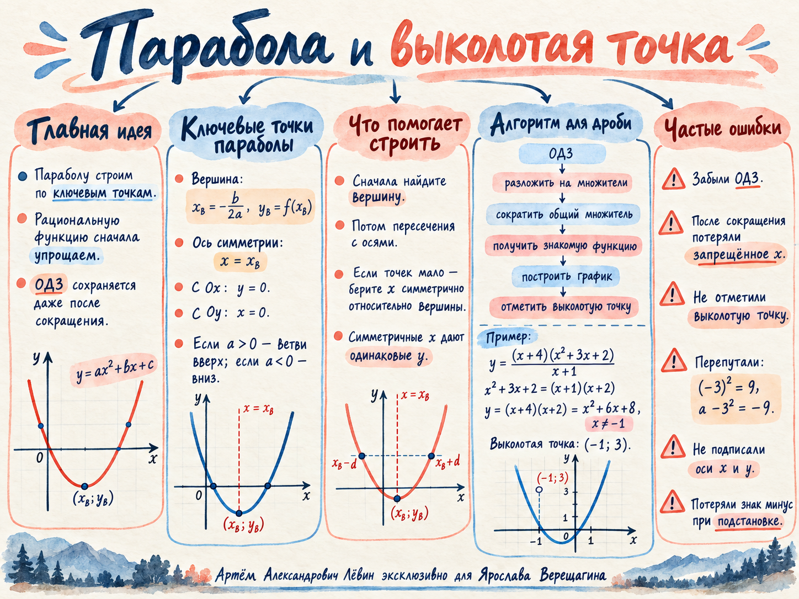

Проверить ответ
Ветви вверх; V(3; −4); x = 3.
Учебная запись · 5 октября 2026
Главная связка занятия: восстановить параболу по ключевым точкам, у дробной функции сначала сохранить исходное ОДЗ, затем сократить общий множитель и правильно отметить выколотую точку.
y = ax² + bx + c, a ≠ 0
До построения определите направление ветвей, вершину, ось симметрии и пересечения с осями. Если точек мало, используйте симметрию относительно прямой x = xв.
Сначала ограничение
Если функция содержит дробь, значения, обнуляющие исходный знаменатель, остаются запрещёнными и после сокращения одинаковых множителей.
x = −1 запрещён
Подставьте запрещённое значение x = −1 в параболу y = x² + 6x + 8. Получается y = 3, поэтому на графике выколота точка (−1; 3).
y = x² + 6x + 8
Она описывает форму параболы.
x ≠ −1
Точка (−1; 3) исключена, поэтому отмечается пустым кружком.
Исследовать пять примеров из тренировочного блока →
Пять действий
Перед записью ответа
(5x + 2)(−x − 4) = 0 даёт x = −0,4 и x = −4. Если требуется больший корень, ответ −0,4.
t = S/v. Если ответ нужен в минутах, часы переводятся по формуле tмин = 60tч.
Визуальная памятка
Ментальная карта связывает опоры параболы, ОДЗ, сокращение, выколотую точку и типичные ошибки.

10 заданий
Ветви вверх; V(3; −4); x = 3.
Ветви вниз; V(2; 5); (0; −3).
(−3; 0), (2; 0), (0; −6).
V(2; −1); ось x = 2; нули 1 и 3; (0; 3); ветви вверх.
A = 9, B = −9, C = −9.
x ≠ −3; y = (x − 1)(x − 2); выколотая точка (−3; 20).
x ≠ −1; y = x² + 6x + 8; V(−3; −1); (−4; 0), (−2; 0), (0; 8); дырка (−1; 3).
x ≠ 2; y = x² − 3x − 10; V(3/2; −49/4); (−2; 0), (5; 0), (0; −10); дырка (2; −12).
x ≠ −3; y = x² + 5x + 4; V(−5/2; −9/4); дырка (−3; −2). Запрет относится к исходной дроби.
x ≠ 1; y = (x + 1)²; дырка (1; 4). С прямой y = 4 остаётся одна общая точка: (−3; 4).
Перед следующим занятием
Отмечено 0 из 5 навыков.